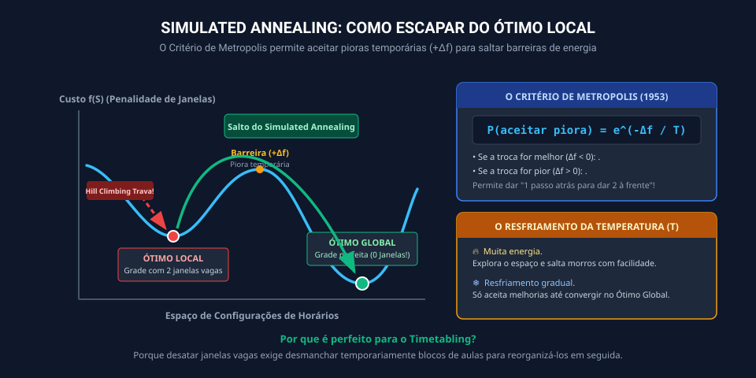
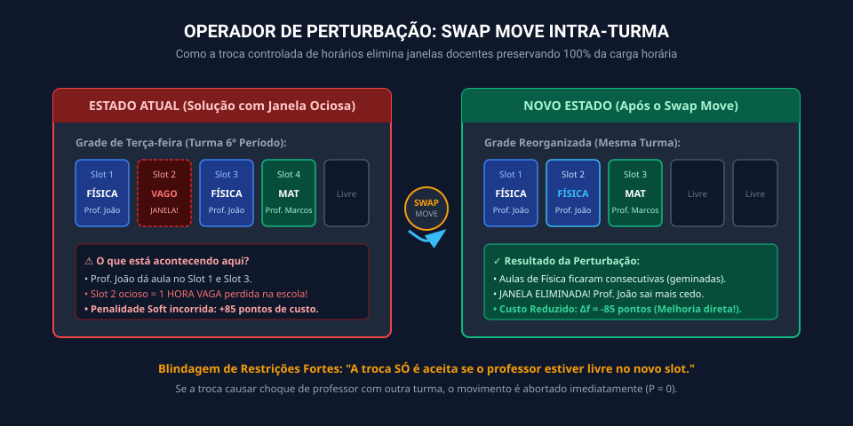

Centro Universitário Geraldo Di Biase (UGB) • Volta Redonda - RJ
Abordagem Heurística para o Problema de Alocação de Horários Escolares
Modelagem Matemática Formal, Espaço de Busca e Framework de Resolução em Dois Estágios (School Timetabling Problem)
O School Timetabling Problem e a Explosão Combinatória
Definição Formal dos Conjuntos e Variáveis de Decisão
Restrições Fortes (Hard Constraints) — Invioláveis
Restrições Fracas (Soft Constraints) — Qualidade Pedagógica
Função de Aptidão e Penalização Ponderada (Fitness Function)
Algoritmo 1: Heurística Construtiva Inspirada em Saturação (DSatur)

Algoritmo 2: Simulated Annealing — Como Escapar de Ótimos Locais

Operador de Perturbação: Swap Move Intra-Turma na Prática
